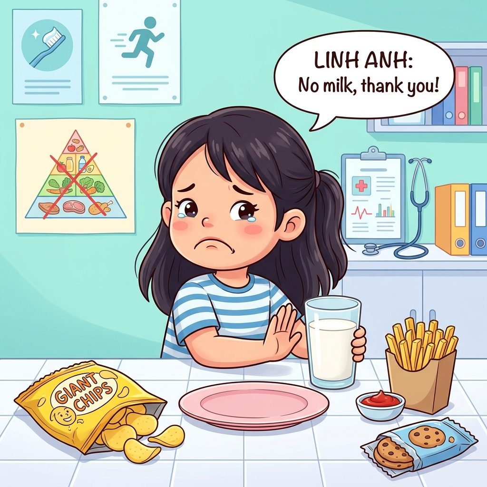
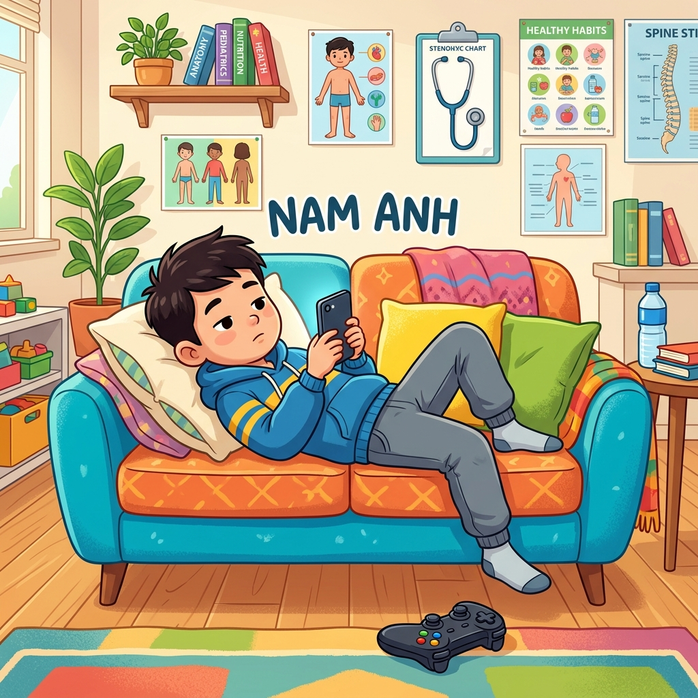

PHÁT TRIỂN CHIỀU CAO TỐI ƯU
Chủ đề: Chăm sóc sức khỏe bản thân | Tiết 1: Bác sĩ khám bệnh
"Vì sao có những bạn chưa phát triển chiều cao tối ưu, và chúng ta có thể làm gì để cải thiện?"
GHÉP HỒ SƠ BỆNH ÁN
Chuẩn Bị
Hình thức
Hoạt động Cặp đôi / Cá nhân
Học liệu phát sẵn
Phiếu ghép hồ sơ bệnh án
Dụng cụ viết
Bút chì, bút mực, thước kẻ
Quan Sát & Thảo Luận
Ghép hồ sơ bác sĩ: Chọn Bệnh nhân ở cột trái, rồi chọn Thói quen tương ứng ở cột phải để ghép nối!

BỆNH NHÂN: LINH ANH
🥗 Ăn rất ít thịt cá, hầu như không uống sữa hoặc sữa chua. Thường xuyên ăn snack bim bim, đồ ăn vặt nhiều dầu mỡ.
BỆNH NHÂN: KEM
😴 Thường xuyên thức muộn đến 12h đêm để xem máy tính chơi game. Sáng hôm sau dậy rất muộn, cơ thể mệt mỏi uể oải.

BỆNH NHÂN: NAM ANH
🏃 Hầu như không tham gia thể thao. Dành toàn bộ thời gian rảnh nằm chơi điện thoại. Ít đi lại, lười làm việc nhẹ.
Lười Vận Động
Chưa nốiDinh Dưỡng Sai Lệch
Chưa nốiThiếu Giấc Ngủ Ngon
Chưa nốiKết Quả Chẩn Đoán Lâm Sàng
DINH DƯỠNG LỖI
Thiếu hụt canxi & đạm
Ăn vặt thay cơm làm trẻ tích tụ chất béo có hại, thiếu hụt đạm cấu tạo mô cơ, thiếu hụt canxi xây dựng mật độ xương.
THIẾU NGỦ SÂU
Hormone GH suy giảm
Ngủ muộn sau 23h làm bỏ lỡ "khung giờ vàng" (22h-02h) giải phóng lượng hormone tăng trưởng GH nhiều nhất của tuyến yên.
THIẾU VẬN ĐỘNG
Sụn tiếp hợp bị nén
Nằm xem điện thoại liên tục làm khớp xương chây lì, đĩa sụn sinh trưởng ở đầu xương không được kích thích giãn nở chiều dài.
3 Yếu Tố Quyết Định Chiều Cao
KẾT LUẬN BAN ĐẦU:
Chiều cao của một người chịu ảnh hưởng to lớn từ lối sống sinh hoạt hàng ngày chứ không hoàn toàn do di truyền quyết định.
Để xương phát triển dài ra tối đa, cơ thể cần sự kết hợp đồng bộ của cả 3 trụ cột y học: Dinh dưỡng đủ chất + Ngủ sớm trước 22h + Vận động thể lực khoa học.
BỘ BA SHIELD SỨC KHỎE
Thiếu 1 trong 3 lá chắn, chiều cao sẽ không thể đạt mức tối đa!
KHÁM BỆNH & HỘI CHẨN
Chuẩn Bị
Thành lập hội đồng
Nhóm 4 học sinh (Bác sĩ chuyên khoa)
Học liệu lâm sàng
5 Phiếu hồ sơ bệnh án + Phiếu chẩn đoán
Ghi chép chuyên môn
Sổ tay ghi chép hội chẩn
Khám Bệnh & Chẩn Đoán
CÁC BƯỚC THỰC HIỆN CỦA HỘI ĐỒNG BÁC SĨ NHÍ:
- 1. Phân tích hồ sơ bệnh án: Đọc kỹ dữ liệu lâm sàng của 5 bệnh nhân (Minh, Lâm, My, Nhi, An) được phân phát.
- 2. Truy tìm dấu hiệu thói quen xấu: Xác định các thói quen có hại ảnh hưởng xấu đến chiều cao trong từng ca bệnh.
- 3. Điền Phiếu chẩn đoán lâm sàng: Phân tích xem mỗi bệnh nhân đang mắc thói quen xấu ở nhóm nào (Dinh dưỡng, Giấc ngủ, Vận động) và hậu quả tương ứng là gì.
- 4. Thống nhất phác đồ: Chuẩn bị ý kiến để đại diện nhóm báo cáo hội chẩn trước cả lớp.
Hồ Sơ Bệnh Án Chi Tiết
Dữ liệu lâm sàng: Bạn Minh cao 115cm (thấp hơn chuẩn trung bình). Trưa nào Minh cũng đi học về muộn nên [bỏ bữa sáng]. Trong bữa trưa ở trường, Minh thường [không uống sữa tươi] và luôn [bỏ lại tôm, cua, cá] vì ngại bóc vỏ. Chiều về Minh thích ăn xúc xích rán cổng trường. Minh đi ngủ lúc 21h30 và thức dậy lúc 6h30 sáng hôm sau. Bạn rất thích tập võ và tham gia chạy bộ đều đặn 45 phút mỗi ngày cùng bố.
Dữ liệu lâm sàng: Bạn Lâm lười ăn rau nhưng ăn rất tốt các món thịt bò, trứng, thịt lợn. Lâm rất ghét uống sữa tươi vì thấy đầy bụng, bù lại Lâm thích [uống nước ngọt có ga và trà sữa] mỗi ngày. Hàng ngày, sau khi đi học về, Lâm thường [trùm chăn kín đầu xem iPad] đến 23h30 mới đi ngủ và thức dậy lúc 6h sáng hôm sau. Lâm [lười vận động], chỉ thích nằm một chỗ chơi game và ngại tham gia các giờ thể chất ở trường.
Dữ liệu lâm sàng: Bạn My có chiều cao bình thường. Sáng nào My cũng uống một hộp sữa tươi 180ml và ăn phở hoặc bánh mì cùng bố mẹ. Bữa trưa và tối My ăn uống đầy đủ các chất, đặc biệt là rau xanh và cá hồi. Tuy nhiên, My [rất lười vận động], đi học về là [ngồi lướt Tiktok, xem Youtube] đến giờ ăn cơm. Sau khi ăn tối, My tiếp tục ngồi học và [không chơi bất kỳ môn thể thao nào]. My thường đi ngủ lúc 22h00 và thức dậy lúc 6h30 sáng hôm sau.
Dữ liệu lâm sàng: Bạn Nhi có chiều cao thấp hơn bạn bè cùng lớp. Nhi rất [kén ăn, thường xuyên bỏ bữa] và mỗi bữa chỉ ăn nửa bát cơm với thịt nạc rán, hoàn toàn [không ăn tôm, cua, hải sản hay rau xanh]. Nhi rất ghét sữa tươi và chỉ uống nước lọc. Nhi [ngủ muộn], thường thức đến 23h00 để đọc truyện tranh. Nhi cũng [ngại vận động], không bao giờ chạy nhảy hay chơi thể thao vì sợ ra mồ hôi bẩn quần áo.
Dữ liệu lâm sàng: Bạn An đang ở độ tuổi phát triển mạnh nhưng chiều cao lại chững lại. An có thói quen [thức khuya đến 24h00] để ôn bài hoặc xem hoạt hình, sáng dậy lúc 6h00 rất mệt mỏi. Trong khẩu phần ăn hàng ngày, An [ăn ít đạm, không ăn cua cá] và [hoàn toàn không uống sữa] vì cho rằng mình đã lớn. An [ít vận động, chỉ dùng thiết bị điện tử] cả ngày nghỉ mà không ra ngoài tập thể thao.
Nếu Duy Trì Thói Quen Này Thì Sao?
Câu hỏi 1: Nhóm thói quen dinh dưỡng lỗi?
Click để xem chẩn đoán nguy cơ của Bệnh viện...
➔ Thiếu canxi & đạm kéo dài sẽ làm khung xương không có nguyên liệu để xây dựng, mật độ xương thấp, đĩa sụn không phát triển, dẫn đến trẻ có nguy cơ thấp còi vĩnh viễn.
Câu hỏi 2: Nhóm thói quen ngủ muộn, thức khuya?
Click để xem chẩn đoán nguy cơ của Bệnh viện...
➔ Thức khuya làm cơ thể giảm tiết hormone sinh trưởng GH. Tuyến yên sản xuất lượng GH cực đại lúc ngủ sâu từ 22h00 - 02h00. Nếu thức khuya sẽ làm xương không được kích hoạt kéo dài.
Câu hỏi 3: Nhóm thói quen ít vận động, dùng thiết bị điện tử?
Click để xem chẩn đoán nguy cơ của Bệnh viện...
➔ Cơ xương khớp không được kéo giãn và dồn nén cơ học cần thiết. Đĩa sụn tăng trưởng chui lọt giữa hai khớp đầu xương không có lực co kéo kích thích phân bào, khiến xương chững lại không dài ra.
Báo Cáo Kết Quả Chẩn Đoán Lâm Sàng
| BỆNH NHÂN | THÓI QUEN LỖI DỰA TRÊN HỒ SƠ | TRỤ CỘT THIẾU | CHẨN ĐOÁN NGUY CƠ LÂM SÀNG |
|---|---|---|---|
| Minh (8t) | Bỏ ăn sáng, không uống sữa, bỏ tôm cua cá, ăn xúc xích rán | Dinh dưỡng | Thiếu hụt canxi & đạm trầm trọng xây cấu trúc xương. |
| Lâm (9t) | Không sữa, uống nước ngọt/trà sữa, ngủ 23h30, lười vận động, xem iPad | Cả 3 Trụ Cột | Đào thải canxi (nước ngọt), thiếu hormone GH, xương chây lì. |
| My (10t) | Lười vận động, ngồi lướt Tiktok/Youtube, không thể thao | Vận động | Sụn tiếp hợp không chịu lực kích thích cơ học kéo giãn đầu xương. |
| Nhi (11t) | Bỏ bữa, kén ăn, không cua cá/rau, không uống sữa, thức 23h00, lười vận động | Cả 3 Trụ Cột | Kém dinh dưỡng, sụn đầu xương chây lì, thiếu hormone GH ban đêm. |
| An (12t) | Thức khuya 24h00, ăn ít đạm, không ăn cua cá, không sữa, ít vận động | Cả 3 Trụ Cột | Thiếu hụt hormone GH trầm trọng nhất (thức 24h00), xương chững tăng trưởng. |
Cơ Chế Phát Triển Xương Dài Ra
ĐĨA SỤN TIẾP HỢP (EPIPHYSEAL PLATE):
Nằm ở hai đầu của các xương dài (như xương đùi, xương chày). Đây là nơi các tế bào sụn liên tục nhân đôi, phân chia và hóa xương (canxi hóa) dưới tác động của hormone tăng trưởng GH và dinh dưỡng.
KÍCH THÍCH LỰC CO KÉO CƠ HỌC:
Khi chạy nhảy, nhảy dây, bóng rổ, đĩa sụn tiếp hợp bị kéo giãn và nén ép tuần hoàn. Lực co kéo này kích thích mạch máu nuôi sụn phát triển, đẩy nhanh tiến trình phân bào giúp xương dài ra cực đại.
ĐĂNG KÝ HỆ SỤN TĂNG TRƯỞNG
1. 🧱 Canxi, Phốt pho & Đạm: Nguyên liệu cốt hóa xương cứng cáp.
2. 💤 Giấc ngủ sâu trước 22h: Tuyến yên giải phóng hormone GH tối đa giúp sụn nhân đôi.
3. 🏃 Luyện tập sức bền: Kích hoạt dòng máu đưa dưỡng chất tới đĩa sụn tiếp hợp.
KÊ ĐƠN THUỐC & PHÁC ĐỒ ĐIỀU TRỊ
Chuẩn Bị
Hình thức hoạt động
Nhóm y khoa 4 người (giữ nguyên nhóm)
Học liệu phác đồ
Phiếu Đơn thuốc Novastars + Nhãn thuốc
Ký tên bác sĩ
Bút ký tên trưởng hội đồng y khoa
Kê Đơn Điều Trị Phác Đồ
QUY TRÌNH KÊ ĐƠN CỦA HỘI ĐỒNG:
- 1. Nhận dạng bệnh án: Mỗi nhóm chọn 1 trong 5 ca bệnh án vừa hội chẩn làm mục tiêu điều trị.
- 2. Phân tích lỗi hành vi: Trích xuất các thói quen xấu của ca bệnh đó (Ví dụ: Lâm ngủ muộn, uống nước ngọt có ga).
- 3. Viết đơn thuốc phục hồi: Ghi rõ phác đồ điều trị định lượng cụ thể: Uống sữa bao nhiêu ml, ngủ lúc mấy giờ, tập thể thao gì bao nhiêu phút.
- 4. Ký duyệt phác đồ: Nhóm trưởng ký xác nhận và hoàn thiện phiếu đơn thuốc.
Đơn Thuốc Phác Đồ Novastars Đạt Chuẩn
ĐƠN THUỐC ĐIỀU TRỊ PHỤC HỒI
🧑⚕️ Bác sĩ điều trị: Hội đồng Bác sĩ nhí Nova Hospital
🧱 Phác đồ Dinh dưỡng: Đảm bảo 500ml sữa tươi/sữa chua mỗi ngày. Bổ sung đạm, hải sản tôm cua, tuyệt đối không bỏ bữa sáng và cai nước ngọt có ga.
💤 Phác đồ Giấc ngủ: Thiết lập thói quen tắt thiết bị điện tử lúc 21h30 và đi ngủ sâu trước 22h00 tối.
🏃 Phác đồ Luyện tập: Nhảy dây, bóng rổ hoặc bơi lội kéo giãn đĩa sụn sinh trưởng > 45 phút mỗi ngày.
KÝ TÊN BÁC SĨ
Chữ ký của hội đồng bác sĩ nhí khẳng định tính trách nhiệm y đức và hiệu lực điều trị của đơn thuốc.
Kỷ Luật Y Khoa Trong Kê Đơn
KÝ DUYỆT ĐƠN THUỐC:
Đơn thuốc chỉ có giá trị pháp lý và thực tế khi người bệnh hiểu rõ cơ chế khoa học đằng sau các chỉ định và cam kết tuân thủ nghiêm túc.
Các bác sĩ nhí hãy lưu giữ đơn thuốc này trong sổ tay của bệnh nhân để tiếp tục theo dõi tiến trình hồi phục chiều cao ở các tiết sau.
PHÁC ĐỒ PHỤC HỒI CHIỀU CAO
Cam kết tuân thủ 100% phác đồ để tối ưu hóa sự nhân lên của đĩa sụn đùi và xương chày.
SỔ TAY MINI BÁC SĨ
Chuẩn Bị Sổ Tay mini
Hình thức
Hoạt động Cá nhân độc lập
Học liệu phát sẵn
Tờ giấy thiết kế gấp sổ tay khổ A4
Học cụ
Kéo thủ công mini + Bút màu trang trí
Làm Sổ Tay Ghi Chép Lâm Sàng
3 NỘI DUNG CHÍNH GHI SỔ TAY:
- Trang 1: Bìa sổ tay: Ghi tên "Sổ Tay Bác Sĩ Nhí" + Họ tên học sinh + vẽ trang trí logo bệnh viện.
- Trang 2: Nhật ký ca lâm sàng: Tóm tắt thói quen xấu phổ biến nhất mà nhóm mình vừa phát hiện.
- Trang 3: Đơn thuốc: Ghi chép phác đồ điều trị chiều cao phục hồi cho ca bệnh nhóm mình phụ trách.
HƯỚNG DẪN GẤP SỔ TAY MINI:
1. Gấp đôi tờ giấy A4 theo chiều dọc.
2. Gấp tiếp làm tư theo chiều ngang.
3. Mở ra, cắt một đường ở giữa và xếp lại thành cuốn sổ tay nhỏ 8 trang xinh xắn.
4. Các bác sĩ tự đặt tên và trang trí bìa sổ tay!
Bản Cam Kết Bác Sĩ Nhí Hành Động
CLICK CHỌN 4 CAM KẾT VÀNG:
CHỮ KÝ BÁC SĨ NHÍ
Hoàn Thành Ca Trực Lâm Sàng
CHÚC MỪNG CÁC BÁC SĨ TẬP SỰ!
Chúng ta đã xuất sắc chẩn đoán thói quen sinh hoạt chưa hợp lý của 5 bệnh nhân, hiểu rõ cơ chế đĩa sụn tăng trưởng, hormone tăng trưởng GH, và tự làm cho mình cuốn sổ tay mini để sẵn sàng ghi chép.
Hãy bảo quản cẩn thận Sổ tay mini này. Trong Tiết 2, chúng ta sẽ bắt đầu vai trò mới là **Bác sĩ cộng đồng** để khảo sát diện rộng thói quen xấu của cả tập thể và thiết kế Poster truyền thông.